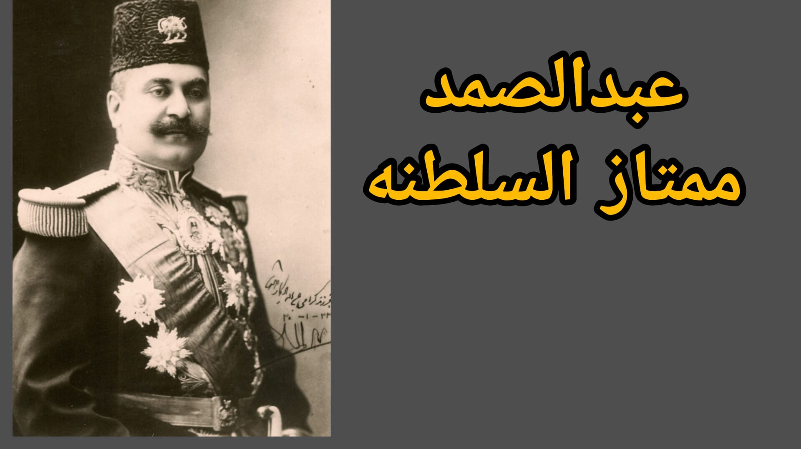
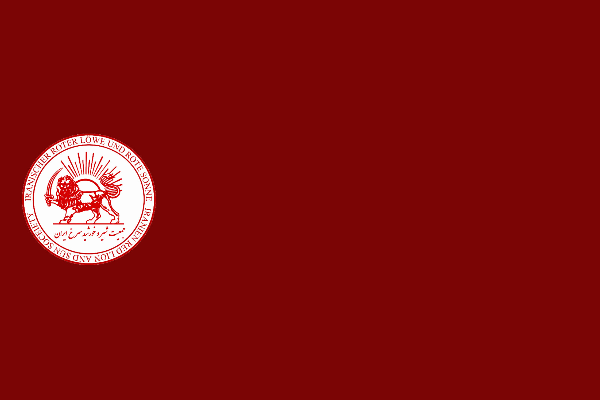
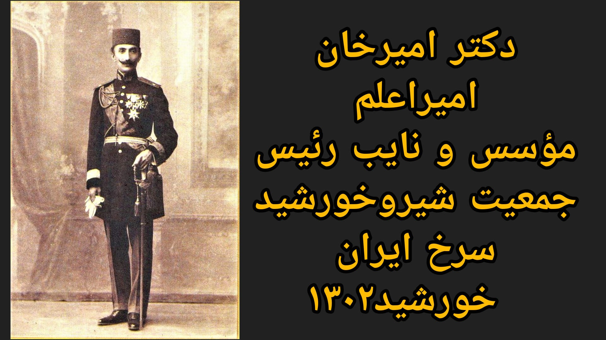
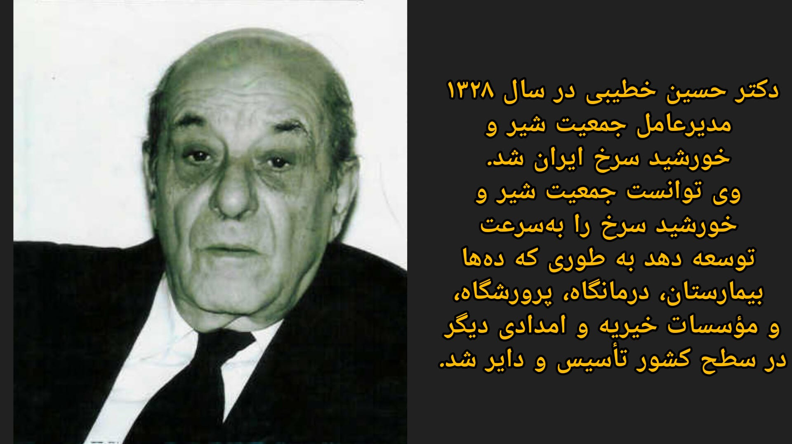
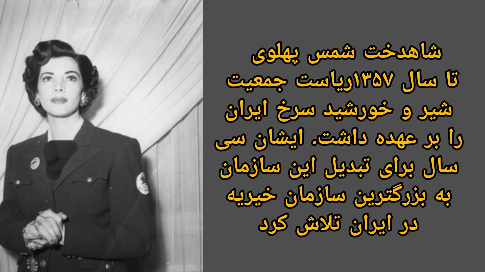
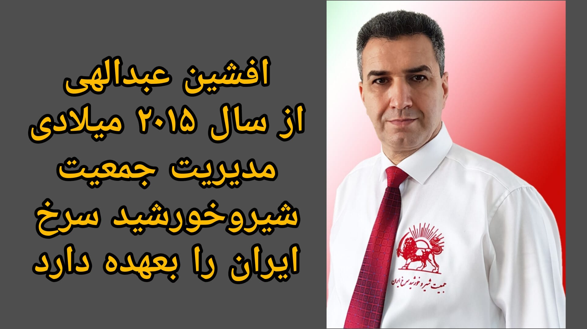

Abdolsamad Momtaz al-Saltaneh
Founder

جمعیت شیروخورشید سرخ ایران
Reviving Iran's historic humanitarian emblem — one of the three official emblems of the International Red Cross and Red Crescent Movement — and continuing its century-old mission of relief, human rights, and service to the Iranian people.
For more than a century, distinguished men and women with an exceptional vision and a humanitarian purpose — dedicated to relieving human suffering and providing services for the public good — came together entirely as volunteers to found and lead the largest humanitarian institution in Iran. These men and women had the Iranian Red Lion and Sun Society registered in international forums as one of the three official emblems recognized by the International Committee of the Red Cross and the International Federation of Red Cross and Red Crescent Societies.
Through the dedication and efforts of Abdolsamad Momtaz al-Saltaneh, Dr. Amir A'lam, Dr. Hossein Khatibi, and Shahdokht Shams Pahlavi, the Society was — until the Islamic Revolution — recognized both in Iran and around the world as one of the most successful humanitarian organizations anywhere. Unfortunately, on 10 Amordad 1359 (early August 1980), following the renaming of the Iranian Red Lion and Sun Society to the Red Crescent Society of the Islamic Republic, the institution underwent major changes: it drifted away from its noble humanitarian mission and was brought into the service of the dictatorship ruling Iran.
However, through the vision and leadership of Afshin Abdollahi, the Iranian Red Lion and Sun Society was officially re-registered in Germany on 10 November 2023, under registration number 5749. Through his efforts and the support of patriotic compatriots, the name, emblem, and flag of the Society are once again flying high, in Iran and around the world. Today, the Society has returned to its founding path, working toward the freedom and prosperity of our beloved homeland, Iran.





The Iranian Red Lion and Sun Society upholds the same seven Fundamental Principles shared by every national society within the worldwide Movement.
Born of a desire to bring assistance without discrimination to the wounded on the battlefield, the Movement endeavors to prevent and alleviate human suffering wherever it may be found. Its purpose is to protect life and health and to ensure respect for the human being, promoting mutual understanding, friendship, cooperation and lasting peace among all peoples.
The Movement makes no discrimination as to nationality, race, religious belief, class or political opinion. It endeavors to relieve the suffering of individuals, guided solely by their needs, and to give priority to the most urgent cases of distress.
In order to continue to enjoy the confidence of all, the Movement may not take sides in hostilities or engage at any time in controversies of a political, racial, religious or ideological nature.
The Movement is independent. National societies, while auxiliaries to the humanitarian services of their governments and subject to the laws of their respective countries, must always maintain their autonomy so they can act in accordance with the Movement's principles.
The Movement is a voluntary relief movement not prompted in any manner by a desire for gain.
There can be only one Red Cross or Red Crescent — or Red Lion and Sun — society in any one country. It must be open to all and must carry on its humanitarian work throughout its territory.
The International Red Cross and Red Crescent Movement, in which all societies have equal status and share equal responsibilities and duties in helping one another, is worldwide.
Iranian Red Lion and Sun Society — Registration No. 5749